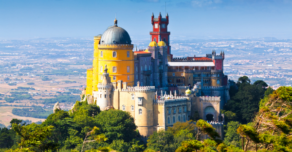

Castelos

Os castelos são atracções turísticas imperdíveis na Europa. Neles respiramos história, revivemos batalhas, conhecemos lugares espectaculares e libertamos nossa imaginação.
São milhares de fortificações que foram erguidas na Idade Média e estão espalhadas por todo Velho Continente. Após muito trabalho e muitos castelos percorridos, elaboramos uma lista com os dez castelos mais bonitos de Portugal.